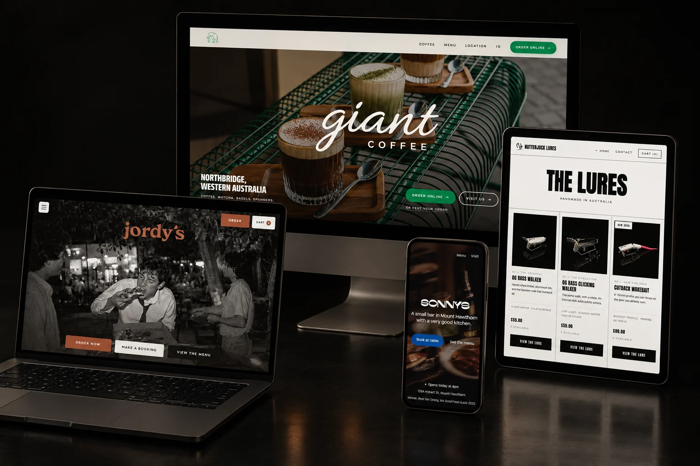

Four recent builds. Designed for the phone first, and every screen after it.

Most businesses pay to get found, let the customer go, then pay to get found again. A site that converts and a list you own is the same money working twice. I do both, and I write what goes out afterwards, because whoever built your website should be the one writing to your customers.